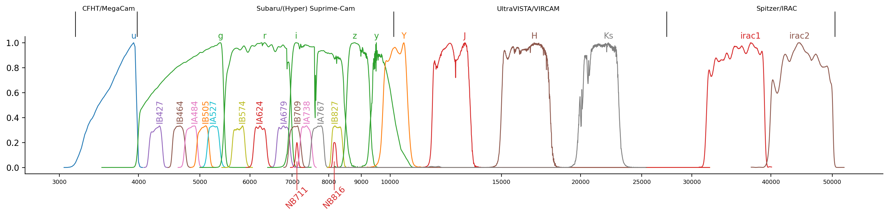
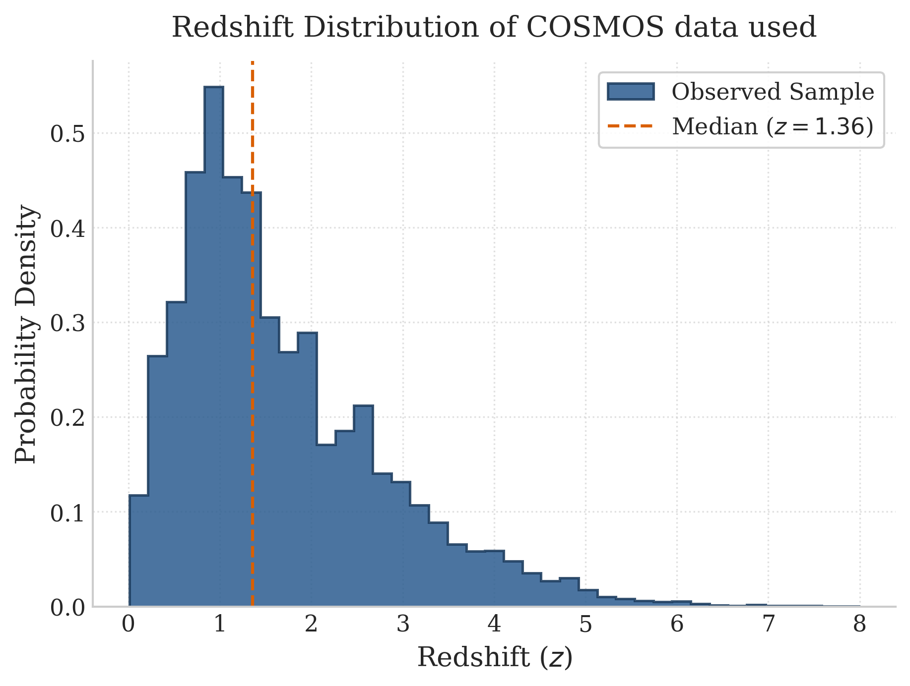
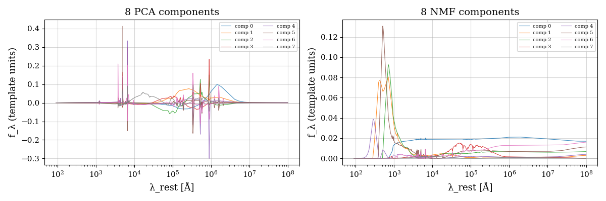
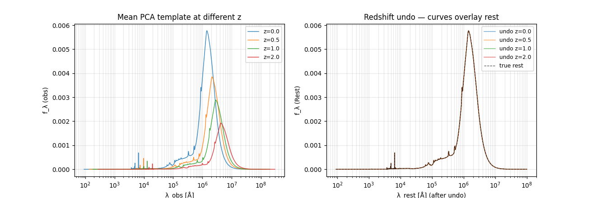

To interpret photometry you need a generative model: a recipe for what a galaxy's light could look like. The industry standard builds that recipe from stellar physics — however, it cracks at high redshift.
Stellar Population Synthesis (SPS) models — Bruzual & Charlot's BC03, Maraston's M05, the modern FSPS — assemble a galaxy spectrum from first principles by assuming a star-formation history, a metallicity, an initial mass function, a dust law, and sum up the light of every star that recipe implies. It's an elegant machine, and it underpins essentially all survey SED-fitting, from EAZY and LePhare to the state-of-the-art pop-cosmos population model this thesis builds beside.
But every SPS spectrum inherits every assumption baked into it, and beyond z ≈ 4 those assumptions get shaky in compounding ways: poorly-understood stellar phases (the infamous thermally-pulsating AGB stars) inject factor-of-2 uncertainties into mass estimates for young galaxies; UV output depends on stellar rotation and binarity that standard codes don't model; and observed z ≈ 7 galaxies show ultraviolet slopes bluer than the models can produce at all without resorting to implausibly young, dust-free, nearly metal-free populations. pop-cosmos is trained on galaxies at r < 25 and z ≲ 4, so its learned spectral shapes are extrapolations exactly where LBG science lives.
The alternative philosophy: stop prescribing spectra from stellar theory and learn the spectral shapes present in the data. Decompose a big library of realistic SEDs into a small set of basis spectra, and describe any galaxy as a weighted mix of them. The weights — the coefficients — become the coordinates of "galaxy space." Extreme UV slopes, odd emission lines, unusual dust: if it's in the library, it's representable. No stellar-evolution assumption stands between the data and the fit.
The raw catalogue is not analysis-ready. This work uses the FARMER photometry (profile-fitting extraction) in 26 bands, then applies cuts and corrections: a combined sky mask removing regions near bright stars and outside uniform coverage; removal of stars; a requirement of detection in at least 8 bands; a magnitude cut in the infrared (<26); and a redshift ceiling of z ≤ 8. Each surviving flux is corrected for Milky Way dust (which varies across the sky) and for the small systematic offsets between measured and template fluxes that every survey carries. Finally, a realistic noise model inflates the raw uncertainties with per-band zeropoint corrections and error floors — because pipelines are always slightly overconfident. Out the other end: 419,654 galaxies with trustworthy fluxes and honest error bars.

Normalised transmission curves for all 26 photometric bands used in this work, spanning ~3,500 Å (ultraviolet) to ~45,000 Å (mid-infrared). Each coloured bump is one filter: the broad tall curves are the CFHT u band and the Subaru HSC broadbands (g, r, i, z, y); the dense picket fence of medium bumps are Subaru's intermediate bands (scaled to ⅓ height for legibility); the two thin spikes are narrowbands NB711 and NB816 (scaled to 0.2); and the wide curves on the right are UltraVISTA's near-infrared Y, J, H, Ks and Spitzer/IRAC's two infrared channels.
This comb of windows is the measurement apparatus. Every model spectrum in the thesis must be multiplied through these exact curves before it can be compared to data, and the density of the comb in the optical is what lets a photometric survey localise spectral breaks — and hence redshifts — without a spectrograph. The sparse coverage between 1 and 4.5 μm, by contrast, is where the model is least constrained.

The photometric redshift distribution (from LePhare template fitting) of the final cleaned sample. The distribution rises steeply, peaks near z ≈ 1, and falls off with a long tail extending to the z = 8 cutoff; the dashed orange line marks the median, z = 1.36.
How to read it: the peak at z ≈ 1 is not where the universe keeps most of its galaxies — it's where this survey's depth keeps most of its detections. The infrared magnitude cut removes faint objects, and faint correlates with far, so high-redshift galaxies are progressively filtered out. The implication threads through the whole thesis: any model trained on this sample sees vastly more low-z examples than high-z ones. That imbalance is why the redshift estimator's data-driven prior (Chapter 05) drags uncertain high-z galaxies toward lower redshifts, and why performance metrics must always be read per redshift bin, never as one global number.
The template library is 30,000 realistic galaxy SEDs (synthesised with FSPS at the best-fit pop-cosmos parameters of 30,000 real COSMOS galaxies, dust included), each sampled at 5,994 wavelength points. Feeding all the 30000 SEDs into inference would be wasteful, since galaxy spectra are hugely correlated. Two classical decompositions do the compression:
The thesis uses both, deliberately: NMF where physical interpretability matters (the IGM model and population model) and PCA where raw reconstruction power matters (the redshift pipeline). That split becomes a genuine plot point later.

Left: the 8 PCA basis vectors. They oscillate freely around zero — negative flux is allowed by construction — and no individual curve means anything physical on its own; only their weighted sums do. The sharp features near 10⁴ Å and beyond correspond to strong emission-line regions in the template library, where spectra vary violently from galaxy to galaxy. Right: the 8 NMF basis vectors, strictly non-negative and visually spectrum-like, with pronounced structure at ~500–1000 Å.
The trade-off in one sentence: PCA is variance-optimal but physically agnostic; NMF is physically interpretable but variance-suboptimal (R² of 1.0000 vs 0.9987 over the library). Implication: whenever a component must be multiplied by a physical transmission curve — as in the IGM fitting — non-negativity is essential, so NMF gets the job; when the task is squeezing maximum information from 26 fluxes, PCA does.
The basis is defined in the rest frame, but real galaxies are observed at every redshift up to 8. So each
component is redshifted — wavelengths stretched by (1+z), fluxes dimmed accordingly — and projected through
all 26 filter curves using the sedpy package. Doing this on the fly for every galaxy would be
crushing, so it's all precomputed on a grid of 501 redshifts spanning z ∈ [0, 8], producing
a tensor of synthetic photometry indexed by (redshift, component, filter). An interpolator over this grid
makes model fluxes at any redshift essentially free — the trick that makes catalogue-scale inference
tractable at all.

Left: the mean PCA template redshifted to z = 0.0, 0.5, 1.0 and 2.0. Two effects are visible exactly as the physics of Chapter 01 demands: the spectral peak slides rightward (wavelengths stretch by 1+z) and the whole curve sinks (cosmological dimming). Right: the acid test — each redshifted curve is passed through the inverse transformation. All four collapse perfectly onto the original rest-frame template (dashed black).
Why bother showing this? Every quantity in the thesis flows through this redshifting machinery thousands of times; a subtle factor-of-(1+z) bug here would silently corrupt every result downstream. Demonstrating that the transformation is exactly invertible to numerical precision certifies the pipeline's most-used moving part before anything is built on top of it.
The output object: a fast function mapping (redshift, 8 coefficients) → predicted flux in 26 filters. Chapters 03–05 each attach a different inference engine to this same function.